Dynamic Programming
Policy evaluation, policy iteration and value iteration: turning the Bellman equations of Lecture 1 into exact planning algorithms, worked end to end on the autonomous delivery drone.
·How to use these notes
These notes are organized in strict dependency order. Every section is a self-contained byte focused on one idea, readable in a few minutes without forward references. Work through each byte's numeric check by hand before moving to the next.
Every byte in Part 2 follows the same predictable five-step structure:
- Motivation: the exact bottleneck or question left open by the previous byte.
- Definition or equation: displayed on its own line with every symbol defined in plain English.
- Intuition: a physical or plain-words reading of what the math is doing and where the terms come from.
- Worked numeric example: small, hand-checkable numbers from the Autonomous Delivery Drone MDP (\(\gamma = 0.8\)), verified in code.
- Shape & units check: explicit matrix and vector dimensions so every equation translates directly into code.
Part 2 (Bytes 10–18): fixed-point contractions, iterative and vectorized policy evaluation, one-step lookahead, the policy improvement theorem, policy iteration, value iteration, generalized policy iteration (GPI), and a complete walkthrough on the drone MDP.
Deferred to Part 3: asynchronous DP (in-place prioritized sweeping) and model-free learning (Monte Carlo and temporal-difference methods) when \(p(s', r \mid s, a)\) is unknown.
·Master notation reference
One symbol means one thing throughout the entire document. Running iterative estimates carry a sweep subscript \(k\) (e.g., \(V_k\) or \(v_k\)) to distinguish them from true fixed points (\(V^{\pi}\) or \(V^{*}\)).
| Symbol | Meaning (strictly reserved) | Defined in |
|---|---|---|
| \(\mathcal{S}, \mathcal{A}(s), \mathcal{R}\) | Finite state space (size \(N = |\mathcal{S}|\)), action set at state \(s\), and reward set. | Recap |
| \(p(s', r \mid s, a)\) | Four-argument joint transition probability \(P(S_{t+1}=s', R_{t+1}=r \mid S_t=s, A_t=a)\). | Recap |
| \(P(s' \mid s, a),\ R(s,a)\) | Marginalized state transition probability and expected immediate reward. | Recap |
| \(\pi(a \mid s)\) or \(\pi(s)\) | Policy: stochastic action probabilities \(\pi(a\mid s)\) or deterministic mapping \(\pi(s) = a\). | Recap |
| \(\gamma \in [0,1)\) | Discount factor ensuring finite returns and max-norm contraction. | Recap |
| \(V^{\pi}(s),\ Q^{\pi}(s,a)\) | True state-value and action-value functions under policy \(\pi\). | Recap |
| \(v^{\pi}, r^{\pi}, P^{\pi}\) | Vector–matrix forms: \(v^{\pi} \in \mathbb{R}^{N}\), \(r^{\pi} \in \mathbb{R}^{N}\), \(P^{\pi} \in \mathbb{R}^{N \times N}\) induced by policy \(\pi\). | Recap |
| \(V^{*}(s), Q^{*}(s,a), \pi^{*}\) | Optimal state-value, optimal action-value, and optimal policy. | Recap |
| \(T^{\pi}, T^{*}\) | Bellman expectation operator and Bellman optimality operator on \(\mathbb{R}^{N}\). | Byte 11 |
| \(\|u - v\|_{\infty},\ \Delta_k\) | Max-norm distance \(\max_{s \in \mathcal{S}} |u(s) - v(s)|\); \(\Delta_k\) tracks the max change in sweep \(k\). | Byte 11 |
| \(\theta > 0\) | Small convergence tolerance; stop iterating when \(\Delta_k < \theta\). | Byte 11 |
| \(V_k(s),\ v_k\) | Iterative value estimate after \(k\) sweeps (scalar at state \(s\), or vector in \(\mathbb{R}^{N}\)). | Byte 12 |
·Part 1 recap: Markov decision processes & Bellman equations
Before building dynamic programming algorithms, here is a concise recap of the core definitions and Bellman equations derived in Lecture 1:
- Agent–environment loop & Markov property: at each step \(t\), the agent observes state \(S_t \in \mathcal{S}\), picks action \(A_t \in \mathcal{A}(S_t)\) via policy \(\pi(a \mid s) = P(A_t = a \mid S_t = s)\), receives reward \(R_{t+1} \in \mathcal{R}\), and transitions to \(S_{t+1} \in \mathcal{S}\). Because \(S_t\) satisfies the Markov property, future transitions depend only on the present state and action: \(p(s', r \mid s, a) \doteq P(S_{t+1}=s', R_{t+1}=r \mid S_t=s, A_t=a)\).
- Marginalized dynamics: summing out reward \(r\) gives the state-transition probability \(P(s' \mid s, a) = \sum_{r} p(s', r \mid s, a)\), and taking expectation gives the immediate reward function \(R(s,a) = \sum_{s'} \sum_{r} r\, p(s', r \mid s, a)\).
- Discounted return & value functions: the discounted return \(G_t = R_{t+1} + \gamma G_{t+1}\) (with \(\gamma \in [0,1)\)) defines the state-value function \(V^{\pi}(s) = \mathbb{E}_{\pi}[G_t \mid S_t = s]\) and action-value function \(Q^{\pi}(s,a) = \mathbb{E}_{\pi}[G_t \mid S_t = s, A_t = a]\).
- Linear vs. non-linear Bellman systems: for a fixed policy \(\pi\), the Bellman expectation equation is a linear system \(v^{\pi} = r^{\pi} + \gamma P^{\pi} v^{\pi}\) (solvable in closed form via \(v^{\pi} = (I - \gamma P^{\pi})^{-1} r^{\pi}\) at \(O(N^3)\) cost). In contrast, the Bellman optimality equation for \(V^{*}\) contains a non-linear \(\max\) operator over actions, requiring iterative DP algorithms.
| Concept | Core equation | Role in dynamic programming |
|---|---|---|
| Marginalized dynamics | \(P(s' \mid s,a) = \sum_r p(s',r \mid s,a)\); \(R(s,a) = \sum_{s',r} r\, p(s',r \mid s,a)\) | Separates state transitions from expected immediate reward. |
| Bellman expectation (\(V^{\pi}\)) | \(V^{\pi}(s) = \sum_a \pi(a \mid s)[R(s,a) + \gamma \sum_{s'} P(s' \mid s,a) V^{\pi}(s')]\) | Linear consistency identity for evaluating a fixed policy \(\pi\). |
| Bellman expectation (\(Q^{\pi}\)) | \(Q^{\pi}(s,a) = R(s,a) + \gamma \sum_{s'} P(s' \mid s,a) V^{\pi}(s')\) | Links action-values directly to downstream state-values. |
| Matrix policy evaluation | \(v^{\pi} = r^{\pi} + \gamma P^{\pi} v^{\pi} \Rightarrow v^{\pi} = (I - \gamma P^{\pi})^{-1} r^{\pi}\) | Closed-form linear system; \(O(N^3)\) inversion fails at large \(N\). |
| Bellman optimality (\(V^{*}\)) | \(V^{*}(s) = \max_{a \in \mathcal{A}(s)}[R(s,a) + \gamma \sum_{s'} P(s' \mid s,a) V^{*}(s')]\) | Non-linear system defining maximum achievable state values. |
| Bellman optimality (\(Q^{*}\)) | \(Q^{*}(s,a) = R(s,a) + \gamma \sum_{s'} P(s' \mid s,a) \max_{a'} Q^{*}(s',a')\) | Non-linear system defining optimal action values. |
From Bellman equations to dynamic programming
In the recap, we reviewed the Bellman expectation and optimality equations. Those equations tell us what the true values \(V^{\pi}\) and \(V^{*}\) satisfy, but they do not yet give us a scalable algorithm to compute them. In Part 2 we build the exact planning toolkit: (1) why iterative DP beats direct matrix inversion and why contractions guarantee convergence (Bytes 10–11); (2) policy evaluation in scalar and vectorized form (Bytes 12–13); (3) one-step lookahead, the policy improvement theorem, and policy iteration (Bytes 14–16); (4) value iteration and generalized policy iteration (Bytes 17–18); and (5) a complete worked walkthrough on the drone MDP.
10From Bellman equations to dynamic programming
Motivation
At the end of Part 1, we hit two roadblocks. First, solving the linear Bellman expectation system via direct matrix inversion \(v^{\pi} = (I - \gamma P^{\pi})^{-1} r^{\pi}\) costs \(O(N^3)\) operations where \(N = |\mathcal{S}|\). Second, the Bellman optimality equation contains a non-linear \(\max\) operator, so matrix inversion cannot be applied at all to find \(V^{*}\). We need a method that scales far better than \(O(N^3)\) and handles both linear and non-linear Bellman equations.
Definition: dynamic programming (DP) in RL
Dynamic Programming (DP) is a family of algorithms that compute value functions and optimal policies by turning Bellman equations from consistency identities into iterative update rules (called backups), assuming we have a complete, exact model of the environment dynamics \(p(s', r \mid s, a)\):
Intuition
Instead of solving all \(N\) coupled equations simultaneously in one giant algebraic inversion, DP starts with an arbitrary guess \(V_0\) (such as all zeros) and repeatedly plugs the current guess into the right-hand side of the Bellman equation to produce better estimates \(V_1, V_2, \ldots\). Each sweep pushes reward information one step backward through the state space — a mechanism called bootstrapping (updating an estimate using other estimates).
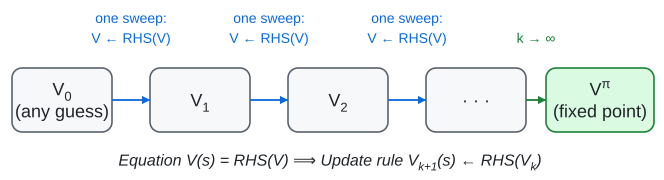
Worked arithmetic example: matrix inversion vs. iterative sweeps
Consider an illustrative MDP with \(N = |\mathcal{S}| = 10{,}000\) states (an illustrative configuration):
- Exact matrix inversion: \(O(N^3) \approx (10^4)^3 = 10^{12}\) floating-point operations (1 trillion FLOPs), plus storing a dense \(10{,}000 \times 10{,}000\) matrix of \(10^8\) floats (\(\approx 800\) MB in float64).
- One iterative DP sweep: \(O(N^2) \approx 10^8\) FLOPs in the dense worst case (\(10{,}000\times\) cheaper per sweep). If each state transitions to at most \(b = 5\) neighbor states, one sweep drops to \(O(N \cdot b) = 5 \times 10^4\) FLOPs.
- 200 sweeps total: \(200 \times 5 \times 10^4 = 10^7\) FLOPs — still \(100{,}000\times\) fewer operations than exact inversion.
11Background: fixed-point iteration, contractions & max-norm stopping
Motivation
In Byte 10, we proposed turning a Bellman equation into an iterative update \(V_{k+1} \leftarrow T(V_k)\). Before writing the DP algorithms, we need two mathematical guarantees: (1) how do we know repeated updates will converge to the unique true value function instead of oscillating or blowing up? (2) How do we measure distance between two value vectors \(V_{k+1}\) and \(V_k\) to decide when to stop?
Definitions: operator, fixed point, max-norm, and \(\gamma\)-contraction
Let \(T: \mathbb{R}^{N} \to \mathbb{R}^{N}\) be an update operator mapping one value vector to the next. A vector \(v^{*}\) is a fixed point of \(T\) if applying \(T\) leaves it unchanged:
To measure the largest discrepancy between two value vectors \(u, v \in \mathbb{R}^{N}\) across all states, we use the max-norm (\(L_\infty\) norm):
An operator \(T\) is a \(\gamma\)-contraction in the max-norm (with \(0 \le \gamma < 1\)) if for every pair of vectors \(u, v \in \mathbb{R}^{N}\):
In iterative DP, we track the sweep change \(\Delta_k = \|V_{k+1} - V_k\|_{\infty}\) and stop as soon as \(\Delta_k < \theta\), where \(\theta > 0\) is a small user-chosen tolerance (for example, \(\theta = 10^{-6}\)).
Where these terms come from & intuition
- Operator (\(T\)) — from functional analysis: in calculus, a function maps one number to one number (\(f(x) = x^2\)). When we move up a level and map an entire vector of \(N\) state values to a brand-new value vector of the same size, mathematicians call it an operator (\(T: \mathbb{R}^N \to \mathbb{R}^N\)). Calling it the "Bellman operator" lets us treat an entire sweep over all \(N\) states as a single step: \(V_{k+1} = T(V_k)\).
- Discrepancy (\(|u(s) - v(s)|\)) — from numerical analysis: from Latin discrepare ("to sound out of tune"), discrepancy simply means the mismatch between two numbers. Taking the max-norm \(\Delta_k = \max_{s} |V_{k+1}(s) - V_k(s)|\) asks: "What is the single worst mismatch anywhere in my value table?" If even the worst state barely moved (\(\Delta_k < \theta\)), every other state moved even less, so it is safe to stop.
- \(\gamma\)-contraction — from Banach's 1922 fixed-point theorem: think of a \(\gamma\)-contraction as a photocopier set to 80% zoom (\(\gamma = 0.8\)). Every time you copy the page, the distance between any two points shrinks by at least 20%. By the Banach fixed-point theorem, applying a \(\gamma\)-contraction repeatedly from any starting guess \(v_0\) is guaranteed to converge to a unique fixed point \(v^{*}\), with error shrinking geometrically: \(\|v_k - v^{*}\|_{\infty} \le \gamma^k \|v_0 - v^{*}\|_{\infty}\). Both the Bellman expectation operator \(T^{\pi}\) and the Bellman optimality operator \(T^{*}\) are \(\gamma\)-contractions in the max-norm whenever \(\gamma \in [0,1)\).
Why are \(T^{\pi}\) and \(T^{*}\) contractions? (short proofs) supplement
Write \((T^{\pi}v)(s) = \sum_a \pi(a\mid s)[R(s,a) + \gamma \sum_{s'} P(s'\mid s,a) v(s')]\) and \((T^{*}v)(s) = \max_a [R(s,a) + \gamma \sum_{s'} P(s'\mid s,a) v(s')]\).
\(T^{\pi}\). The rewards cancel in the difference: \((T^{\pi}u - T^{\pi}v)(s) = \gamma \sum_{s'} P^{\pi}(s, s')\,(u(s') - v(s'))\). The weights \(P^{\pi}(s, \cdot)\) are non-negative and sum to 1, so this is \(\gamma\) times an average of differences, and an average can never exceed the largest one in size: \(|(T^{\pi}u - T^{\pi}v)(s)| \le \gamma \|u - v\|_{\infty}\). Take the max over \(s\).
\(T^{*}\). One extra fact: for any two lists of numbers, \(|\max_a f(a) - \max_a g(a)| \le \max_a |f(a) - g(a)|\) (the best of \(f\) can beat the best of \(g\) by at most the biggest single gap). Apply it with \(f(a), g(a)\) the bracket evaluated at \(u\) and \(v\); each gap is \(\gamma\) times an average of differences, as above.
Drone check. Take \(u = [5, -3, 12]^T\), \(v = [0, 4, 2]^T\), so \(\|u - v\|_\infty = 10.00\). For \(\pi_1\) (Byte 12): \(T^{\pi_1}u = \left[10.16,\ 12.00,\ -1.20\right]^{T}\), \(T^{\pi_1}v = \left[11.92,\ 8.08,\ -0.40\right]^{T}\), distance \(3.92 \le 0.8 \times 10 = 8.00\) ✓. For \(T^*\): distance \(5.00 \le 8.00\) ✓. The bound is a guarantee, not an equality; the actual shrink is often larger.
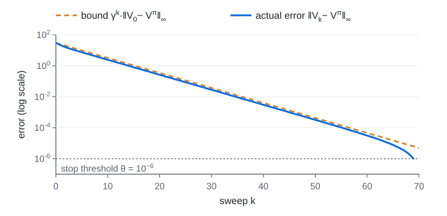
Worked numeric example
1. Scalar fixed-point contraction: consider the 1-state Bellman update \(T(x) = 10 + 0.8x\) (so \(\gamma = 0.8\)). Its unique fixed point satisfies \(x^{*} = 10 + 0.8x^{*} \Rightarrow 0.2x^{*} = 10 \Rightarrow x^{*} = 50.0\). Starting from \(x_0 = 0.0\):
| Iteration \(k\) | Estimate \(x_k\) | True error \(|x_k - 50|\) | Step change \(\Delta_k\) |
|---|---|---|---|
| 0 | 0.0000 | 50.0000 | — |
| 1 | 10.0000 | 40.0000 | 10.0000 |
| 2 | 18.0000 | 32.0000 | 8.0000 |
| 3 | 24.4000 | 25.6000 | 6.4000 |
| 4 | 29.5200 | 20.4800 | 5.1200 |
Every single step multiplies both the true error and \(\Delta_k\) by exactly \(\gamma = 0.8\) (\(50.0 \to 40.0 \to 32.0 \to 25.6 \to 20.48\)).
2. Vector max-norm check: suppose \(V_1 = [10.00, 6.00, -2.00]^T\) and \(V_2 = [16.08, 6.32, 4.40]^T\). The coordinate-wise absolute differences are \(|16.08 - 10.00| = 6.08\), \(|6.32 - 6.00| = 0.32\), and \(|4.40 - (-2.00)| = 6.40\). Therefore, \(\|V_2 - V_1\|_{\infty} = \max(6.08, 0.32, 6.40) = 6.40\).
Prediction: grading a frozen policy
Compute \(V^{\pi}\) for one fixed policy, by sweeps — state by state, then as one matrix line.
12Iterative policy evaluation (synchronous vs. in-place)
Motivation
Because the Bellman expectation equation expresses each state's value in terms of its neighbors' values, the unknowns are locked in a circular dependency — you cannot plug in a formula once and read off the answer. Before we can find an optimal policy, we must first solve the prediction problem: given one frozen policy \(\pi\), iteratively compute \(V^{\pi}(s)\) for every state \(s\).
Equation: iterative policy evaluation update (and every factor in plain English)
Start with an arbitrary initial guess \(V_0(s) = 0\) for all \(s \in \mathcal{S}\). On each sweep \(k = 0, 1, 2, \ldots\), update every state \(s \in \mathcal{S}\):
Broken down piece by piece in plain English:
- \(V_k(s)\) — current value estimate at sweep \(k\): how much total discounted reward we currently believe state \(s\) is worth under policy \(\pi\).
- \(\pi(a \mid s)\) — policy's action probability: how likely the agent is to pick action \(a\) in state \(s\) (1 for the chosen action and 0 for others under a deterministic policy).
- \(\sum_{a \in \mathcal{A}(s)}\) — average over your choices: combines all candidate actions weighted by how often \(\pi\) picks each one.
- \(R(s,a)\) — immediate reward: the expected payoff received right now on this single step for taking action \(a\) in state \(s\).
- \(\gamma \in [0,1)\) — discount factor: how much future rewards are weighted relative to immediate rewards (here \(\gamma = 0.8\)).
- \(P(s' \mid s, a)\) — environment transition probability: the likelihood of landing in next state \(s'\) after taking action \(a\) in state \(s\).
- \(\sum_{s'} P(s' \mid s,a)\, V_k(s')\) — expected next-state value: the probability-weighted average of the current value table across all possible next states \(s'\).
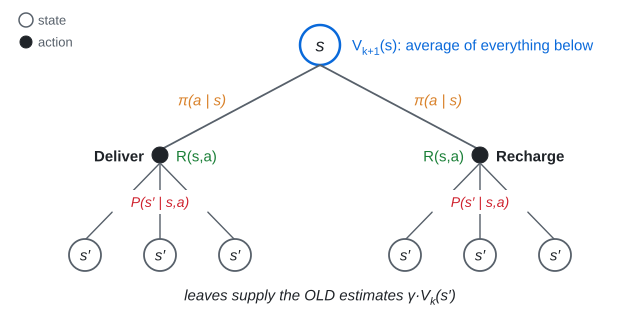
Intuition: synchronous (two-array) vs. in-place (one-array) sweeps
There are two standard ways to run a sweep across all states \(s \in \mathcal{S}\):
- Synchronous (two-array) backup: compute all new values \(V_{k+1}(s)\) using only the old table \(V_k\), then swap \(V_k \leftarrow V_{k+1}\) after all states finish. This matches the operator \(V_{k+1} = T^{\pi}(V_k)\) literally.
- In-place (one-array) backup: keep a single table \(V\) and overwrite \(V(s)\) immediately as soon as it is computed. Later states in the same sweep immediately reuse those fresher numbers. It is commonly reported that in-place updates converge in fewer sweeps, though the exact speedup depends on the state update order (a design choice, not a universal guarantee). Both variants converge to the exact same unique fixed point \(V^{\pi}\).
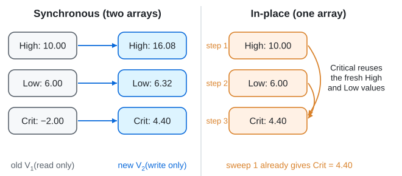
Concrete component tables: autonomous delivery drone MDP (\(\gamma = 0.8\))
We return to the running example of Lecture 1: an autonomous delivery drone managing its battery across \(N = 3\) states \(\mathcal{S} = \{\text{High}\ (s_0), \text{Low}\ (s_1), \text{Critical}\ (s_2)\}\) and \(|\mathcal{A}| = 2\) actions \(\mathcal{A} = \{\text{Deliver}\ (a_0), \text{Recharge}\ (a_1)\}\) with \(\gamma = 0.8\) (all values are hand-chosen teaching numbers). Here we evaluate the fixed heuristic policy \(\pi_1 = (\text{Deliver}, \text{Deliver}, \text{Recharge})\):
| State \(s\) | \(\pi_1(\text{Deliver} \mid s)\) | \(\pi_1(\text{Recharge} \mid s)\) | Row sum |
|---|---|---|---|
| High (\(s_0\)) | 1.0 | 0.0 | 1.0 |
| Low (\(s_1\)) | 1.0 | 0.0 | 1.0 |
| Critical (\(s_2\)) | 0.0 | 1.0 | 1.0 |
| State \(s\) | \(R(s, \text{Deliver})\) | \(R(s, \text{Recharge})\) | Physical meaning |
|---|---|---|---|
| High (\(s_0\)) | \(+10\) | \(0\) | Full delivery revenue vs. idle on charging pad |
| Low (\(s_1\)) | \(+6\) | \(-1\) | Shorter delivery vs. small charging cost |
| Critical (\(s_2\)) | \(-5\) | \(-2\) | Battery stall/penalty vs. recovery fast-charge |
| \(P(s' \mid s, \text{Deliver})\) | High (\(s_0\)) | Low (\(s_1\)) | Critical (\(s_2\)) | Row sum |
|---|---|---|---|---|
| High (\(s_0\)) | 0.4 | 0.6 | 0.0 | 1.0 |
| Low (\(s_1\)) | 0.0 | 0.3 | 0.7 | 1.0 |
| Critical (\(s_2\)) | 0.0 | 0.0 | 1.0 | 1.0 |
| \(P(s' \mid s, \text{Recharge})\) | High (\(s_0\)) | Low (\(s_1\)) | Critical (\(s_2\)) | Row sum |
|---|---|---|---|---|
| High (\(s_0\)) | 1.0 | 0.0 | 0.0 | 1.0 |
| Low (\(s_1\)) | 0.8 | 0.2 | 0.0 | 1.0 |
| Critical (\(s_2\)) | 0.5 | 0.5 | 0.0 | 1.0 |
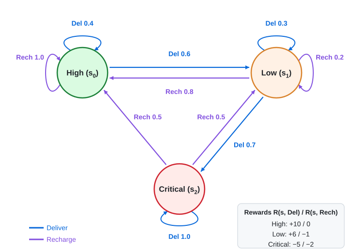
Worked numeric example: evaluating state High & full sweeps 1–2
All four tables above stay fixed during policy evaluation. Only the \(3 \times 1\) value table \(V_k(s)\) updates, starting from \(V_0 = [0.00, 0.00, 0.00]^T\):
- Single-state plug-in for High (sweep 1, reading \(V_0 = [0,0,0]^T\)):
Deliver branch (weight 1.0): \(1.0 \times [10 + 0.8(0.4\cdot 0 + 0.6 \cdot 0 + 0.0 \cdot 0)] = 10.00\)
Recharge branch (weight 0.0): \(0.0 \times [0 + 0.8(1.0 \cdot 0 + 0.0 \cdot 0 + 0.0 \cdot 0)] = 0.00\)
Total: \(V_1(\text{High}) = 10.00\). Similarly, \(V_1(\text{Low}) = 6.00\) and \(V_1(\text{Crit}) = -2.00\) (\(\Delta_1 = 10.00\)). - Synchronous sweep 2 (reading \(V_1 = [10.00, 6.00, -2.00]^T\)):
\(V_2(\text{High}) = 10 + 0.8(0.4 \cdot 10 + 0.6 \cdot 6 + 0.0 \cdot (-2)) = 10 + 0.8(7.60) = 16.08\)
\(V_2(\text{Low}) = 6 + 0.8(0.0 \cdot 10 + 0.3 \cdot 6 + 0.7 \cdot (-2)) = 6 + 0.8(0.40) = 6.32\)
\(V_2(\text{Crit}) = -2 + 0.8(0.5 \cdot 10 + 0.5 \cdot 6 + 0.0 \cdot (-2)) = -2 + 0.8(8.00) = 4.40\) (\(\Delta_2 = 6.40\)). - In-place sweep 1 (order High → Low → Critical):
\(V(\text{High}) = 10 + 0 = 10.00\); \(V(\text{Low}) = 6 + 0 = 6.00\); then \(V(\text{Crit})\) immediately reuses the fresh High and Low values: \(V(\text{Crit}) = -2 + 0.8(0.5 \cdot 10.00 + 0.5 \cdot 6.00) = 4.40\) on the very first sweep!
At \(\theta = 10^{-6}\), synchronous converges in 70 sweeps and in-place converges in 51 sweeps, both landing on \(V^{\pi_1} = \left[29.9751,\ 21.6314,\ 18.6426\right]^{T}\).
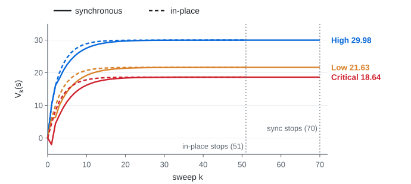
13Vectorized policy evaluation
Motivation
Writing nested loops over states \(s\), actions \(a\), and next states \(s'\) is slow and error-prone. By collapsing the action sums into policy-averaged tables \(r^{\pi} \in \mathbb{R}^{N}\) and \(P^{\pi} \in \mathbb{R}^{N \times N}\), we can update all \(N\) states simultaneously in a single matrix-vector line.
Equation: vectorized synchronous policy evaluation
Deriving the matrix form from basics (5-step algebraic proof)
We derive \(v^{\pi} = r^{\pi} + \gamma P^{\pi} v^{\pi}\) from the scalar Bellman expectation equation using only three elementary rules of algebra: distributing multiplication over addition, swapping two finite sums, and stacking \(N\) scalar equations vertically:
- Index the states (\(s_0, s_1, \ldots, s_{N-1}\)): pick one starting state \(s_i\) and index next states by \(s_j\): $$V^{\pi}(s_i) = \sum_{a} \pi(a \mid s_i)\Big[R(s_i, a) + \gamma \sum_{j=0}^{N-1} P(s_j \mid s_i, a)\, V^{\pi}(s_j)\Big]$$
- Distribute \(\pi(a \mid s_i)\) across the bracket: using \(c(A + B) = cA + cB\), split the action sum into two terms: $$V^{\pi}(s_i) = \sum_{a} \pi(a \mid s_i)\, R(s_i, a) + \gamma \sum_{a} \pi(a \mid s_i) \sum_{j=0}^{N-1} P(s_j \mid s_i, a)\, V^{\pi}(s_j)$$
- Swap the two finite sums in the second term: adding a finite grid by rows first or columns first gives the same sum, so swap \(\sum_a\) and \(\sum_j\) and factor \(V^{\pi}(s_j)\) outside the inner action sum: $$\text{Second term} = \gamma \sum_{j=0}^{N-1} \Big(\sum_{a} \pi(a \mid s_i)\, P(s_j \mid s_i, a)\Big) V^{\pi}(s_j)$$
- Collapse action sums into \(r^{\pi}[i]\) and \(P^{\pi}[i,j]\): define \(r^{\pi}[i] \doteq \sum_a \pi(a \mid s_i) R(s_i, a)\) and \(P^{\pi}[i,j] \doteq \sum_a \pi(a \mid s_i) P(s_j \mid s_i, a)\). The action variable \(a\) disappears completely: $$V^{\pi}(s_i) = r^{\pi}[i] + \gamma \sum_{j=0}^{N-1} P^{\pi}[i,j]\, V^{\pi}(s_j)$$
- Recognize the dot product and stack all \(N\) equations: summing \(P^{\pi}[i,j]\, V^{\pi}(s_j)\) over \(j\) is row \(i\) of the matrix-vector product \(P^{\pi} v^{\pi}\). Stacking rows \(i = 0, \ldots, N-1\) gives \(v^{\pi} = r^{\pi} + \gamma P^{\pi} v^{\pi}\), and replacing the fixed point \(v^{\pi}\) with iterates gives \(v_{k+1} = r^{\pi} + \gamma P^{\pi} v_k\).
Worked numeric example: delivery drone sweep 2 in matrix form
From the tables in Byte 12, \(\pi_1 = (\text{Deliver}, \text{Deliver}, \text{Recharge})\) selects the Deliver rows for High and Low, and the Recharge row for Critical:
Starting from \(v_1 = [10.00, 6.00, -2.00]^T\), sweep 2 executes in one matrix-vector step:
All three states update simultaneously, matching our scalar sweep 2 numbers in Byte 12 identically.
Code sanity check: every row of \(P^{\pi}\) must sum to 1.0 (i.e., \(\sum_{j} P^{\pi}[i,j] = 1\) for all \(i\)).
Control: improving the policy
Look one step ahead, act greedily, prove it never hurts, and repeat until nothing changes.
14One-step lookahead and greedy policy extraction
Motivation
Policy evaluation (Bytes 12–13) only grades a frozen policy \(\pi\); it never changes \(\pi\). To move from prediction to control (finding a better policy), we ask: standing in state \(s\), what happens if we deviate from \(\pi\) for just one step by trying a candidate action \(a\), and then follow \(\pi\) forever after?
Equations: one-step lookahead and greedy policy extraction
From the mutually recursive relationship in Lecture 1, Byte 7, once \(V^{\pi}\) is known we compute the action-value \(Q^{\pi}(s,a)\) for every state–action pair via a one-step lookahead:
We then construct a new deterministic policy \(\pi'\) by acting greedily with respect to \(Q^{\pi}\) — selecting the action with the highest lookahead score in each state:
Here \(\arg\max_{a}\) returns an action \(a^{*} \in \mathcal{A}(s)\) achieving the maximum (if two actions tie, break ties consistently in favor of the current action \(\pi(s)\) to avoid unnecessary switching).
Intuition
Evaluating \(V^{\pi}\) gives you a value map of the environment under your current habit \(\pi\). One-step lookahead stands at state \(s\), peeks one move ahead for every available action \(a\) (even actions \(\pi\) ignored), adds the immediate reward to \(\gamma\) times the map value of where you land, and updates your habit to whichever action scores highest.
Worked numeric example: improving \(\pi_1\) on the delivery drone
Using \(V^{\pi_1} = [29.9751, 21.6314, 18.6426]^T\) from Byte 12, test both actions in every state:
- High (\(s_0\)): \(Q^{\pi_1}(\text{High}, \text{Del}) = 10 + 0.8(0.4 \cdot 29.9751 + 0.6 \cdot 21.6314) = 29.9751\) vs. \(Q^{\pi_1}(\text{High}, \text{Rech}) = 0 + 0.8(1.0 \cdot 29.9751) = 23.9801 \Rightarrow\) Deliver.
- Low (\(s_1\)): \(Q^{\pi_1}(\text{Low}, \text{Del}) = 6 + 0.8(0.3 \cdot 21.6314 + 0.7 \cdot 18.6426) = 21.6314\) vs. \(Q^{\pi_1}(\text{Low}, \text{Rech}) = -1 + 0.8(0.8 \cdot 29.9751 + 0.2 \cdot 21.6314) = 21.6451 \Rightarrow\) Recharge (switches!).
- Critical (\(s_2\)): \(Q^{\pi_1}(\text{Crit}, \text{Del}) = -5 + 0.8(1.0 \cdot 18.6426) = 9.9141\) vs. \(Q^{\pi_1}(\text{Crit}, \text{Rech}) = -2 + 0.8(0.5 \cdot 29.9751 + 0.5 \cdot 21.6314) = 18.6426 \Rightarrow\) Recharge.
| State \(s\) | \(V^{\pi_1}(s)\) | \(Q^{\pi_1}(s, \text{Deliver})\) | \(Q^{\pi_1}(s, \text{Recharge})\) | Greedy \(\pi_2(s)\) |
|---|---|---|---|---|
| High (\(s_0\)) | 29.9751 | 29.9751 | 23.9801 | Deliver |
| Low (\(s_1\)) | 21.6314 | 21.6314 | 21.6451 | Recharge (updated!) |
| Critical (\(s_2\)) | 18.6426 | 9.9141 | 18.6426 | Recharge |
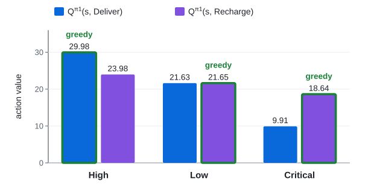
15The policy improvement theorem
Motivation
In Byte 14, switching to Recharge in state Low improved our expected return if we deviate once and then return to \(\pi_1\). What if we switch permanently to \(\pi_2\) everywhere — so that every future visit to Low also chooses Recharge? Could changing actions across states accidentally hurt us? The policy improvement theorem proves that it can never hurt, and strictly helps unless \(\pi\) was already optimal.
Theorem statement
Let \(\pi\) and \(\pi'\) be any pair of deterministic policies such that for all states \(s \in \mathcal{S}\):
Then the new policy \(\pi'\) is guaranteed to be at least as good as \(\pi\) in every state:
Moreover, if the inequality is strict for at least one state \(s\), then \(V^{\pi'}(s) > V^{\pi}(s)\) for that state. If \(\pi'\) is greedy with respect to \(V^{\pi}\) and \(V^{\pi'} = V^{\pi}\) everywhere, then \(\pi'\) satisfies the Bellman optimality equation and is therefore an optimal policy \(\pi^{*}\).
Step-by-step proof (telescoping expansion)
Start from \(V^{\pi}(s)\) and repeatedly apply the hypothesis \(Q^{\pi}(s', \pi'(s')) \ge V^{\pi}(s')\) at each future time step:
- By hypothesis: \(V^{\pi}(s) \le Q^{\pi}(s, \pi'(s)) = \mathbb{E}_{\pi'}[R_{t+1} + \gamma V^{\pi}(S_{t+1}) \mid S_t = s]\).
- Apply the same hypothesis to \(V^{\pi}(S_{t+1})\): \(\le \mathbb{E}_{\pi'}[R_{t+1} + \gamma Q^{\pi}(S_{t+1}, \pi'(S_{t+1})) \mid S_t = s]\).
- Expand \(Q^{\pi}\) one step further: \(= \mathbb{E}_{\pi'}[R_{t+1} + \gamma R_{t+2} + \gamma^2 V^{\pi}(S_{t+2}) \mid S_t = s]\).
- Repeat infinitely: \(\le \mathbb{E}_{\pi'}[R_{t+1} + \gamma R_{t+2} + \gamma^2 R_{t+3} + \ldots \mid S_t = s] = \mathbb{E}_{\pi'}[G_t \mid S_t = s] = V^{\pi'}(s)\).
Intuition & numeric verification
If taking the first step under \(\pi'\) beats \(\pi\), then taking the second step under \(\pi'\) also beats \(\pi\), and by induction switching to \(\pi'\) forever beats sticking with \(\pi\).
Numeric verification from Byte 14: evaluating \(\pi_2 = (\text{Deliver}, \text{Recharge}, \text{Recharge})\) gives \(V^{\pi_2} = \left[30.0000,\ 21.6667,\ 18.6667\right]^{T}\) vs. \(V^{\pi_1} = \left[29.9751,\ 21.6314,\ 18.6426\right]^{T}\). Indeed, \(V^{\pi_2}(s) > V^{\pi_1}(s)\) in every state!
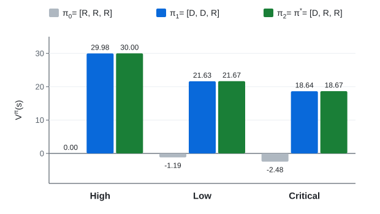
16Policy iteration
Motivation
In Byte 15, one round of policy evaluation + policy improvement moved us from \(\pi_1\) to a strictly better policy \(\pi_2\). What if we start from a terrible policy like \(\pi_0 = (\text{Recharge}, \text{Recharge}, \text{Recharge})\) that needs multiple improvement rounds? We simply repeat the evaluation–improvement cycle until the policy stops changing.
Algorithm: policy iteration
Policy iteration alternates between full policy evaluation (\(E\)) and policy improvement (\(I\)) until policy stability:
- Initialize an arbitrary deterministic policy \(\pi_0(s) \in \mathcal{A}(s)\) for all \(s \in \mathcal{S}\).
- Policy evaluation (\(E\)): compute \(V^{\pi_m}\) using iterative policy evaluation (Bytes 12–13) until \(\Delta_k < \theta\).
- Policy improvement (\(I\)): for every state \(s\), set \(\pi_{m+1}(s) = \arg\max_{a}[R(s,a) + \gamma \sum_{s'} P(s' \mid s,a)\, V^{\pi_m}(s')]\) (breaking ties in favor of \(\pi_m(s)\)).
- Stopping check: if \(\pi_{m+1}(s) = \pi_m(s)\) for all \(s\), stop and return \((\pi_m, V^{\pi_m})\). Otherwise, set \(m \leftarrow m + 1\) and return to step 2.
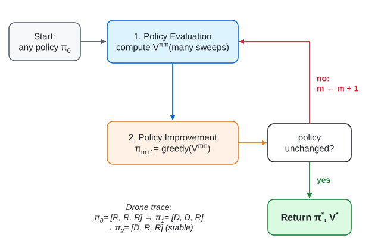
Intuition & finite convergence guarantee
Because a finite MDP has at most \(|\mathcal{A}|^{N}\) distinct deterministic policies (here \(2^3 = 8\)), and every non-terminating policy improvement step strictly increases the value vector (by Byte 15), no policy can ever be visited twice. Thus policy iteration is mathematically guaranteed to converge to an exact optimal policy \(\pi^{*}\) in a finite number of iterations — often very few (commonly reported as 3 to 10 outer iterations on small-to-medium MDPs, though this is an empirical observation, not a worst-case bound).
Worked numeric summary (drone policy iteration from always-Recharge)
| Outer iter \(m\) | Current \(\pi_m\) | Evaluated \(V^{\pi_m}\) | Improved \(\pi_{m+1}\) | Policy stable? |
|---|---|---|---|---|
| 0 | (Rech, Rech, Rech) | \([0.0000, -1.1905, -2.4762]^T\) | (Del, Del, Rech) | No (policy updated) |
| 1 | (Del, Del, Rech) | \([29.9751, 21.6314, 18.6426]^T\) | (Del, Rech, Rech) | No (policy updated) |
| 2 | (Del, Rech, Rech) | \([30.0000, 21.6667, 18.6667]^T\) | (Del, Rech, Rech) | Yes — optimal! |
Value iteration and the unifying view
Truncate evaluation to one sweep, fold in the max — and see both algorithms as one idea.
17Value iteration
Motivation
Look at policy iteration (Byte 16) closely: every outer iteration waits for policy evaluation to converge all the way to \(\Delta_k < \theta\) (70 inner sweeps for \(\pi_1\)!), even when an intermediate policy is suboptimal and about to be discarded. Do we really need to evaluate a bad policy to six decimal places before improving it? Value iteration says no: truncate policy evaluation to just one sweep, and fold the \(\max\) operator directly into the backup.
Equation: value iteration update
Value iteration turns the Bellman optimality equation directly into an iterative update rule. Initialize \(V_0(s) = 0\) for all \(s\), and repeat until \(\Delta_k = \max_{s} |V_{k+1}(s) - V_k(s)| < \theta\):
Once \(V_k\) converges (\(\Delta_k < \theta\)), extract the final greedy policy once at the end:
Here the right-hand side is the Bellman optimality operator \((T^{*} V_k)(s)\). Because \(T^{*}\) is a \(\gamma\)-contraction in the max-norm (Byte 11), \(V_k \to V^{*}\) from any initial \(V_0\).
Intuition
Value iteration fuses one sweep of policy evaluation and one step of policy improvement into a single line. You do not store an explicit policy \(\pi\) during the loop — the \(\max\) operator implicitly acts greedily at every state on every sweep.
Worked numeric example (first 3 sweeps on the delivery drone)
| Sweep \(k\) | \(V_k(\text{High})\) | \(V_k(\text{Low})\) | \(V_k(\text{Crit})\) | \(\Delta_k\) | Implicit greedy \(\pi\) |
|---|---|---|---|---|---|
| 0 | 0.0000 | 0.0000 | 0.0000 | — | — |
| 1 | 10.0000 | 6.0000 | −2.0000 | 10.0000 | (Del, Del, Rech) |
| 2 | 16.0800 | 6.3600 | 4.4000 | 6.4000 | (Del, Rech, Rech) |
| 3 | 18.1984 | 10.3088 | 6.9760 | 3.9488 | (Del, Rech, Rech) |
At sweep 1, \(V_1(s) = \max_a R(s,a) = [10, 6, -2]^T\). By sweep 2, the implicit greedy policy already identifies (Del, Rech, Rech), while the value numbers finish converging at sweep 70 to \(V^{*} = \left[30.0000,\ 21.6667,\ 18.6667\right]^{T}\).
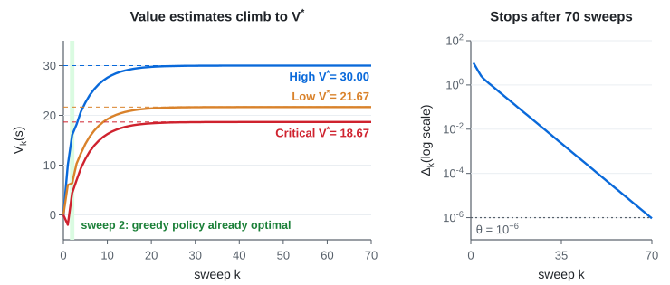
18Policy iteration vs. value iteration & generalized policy iteration (GPI)
Motivation
Policy iteration (Byte 16) and value iteration (Byte 17) look like two distinct algorithms, yet they solve the exact same Bellman optimality equation and converge to the exact same \(V^{*}\) and \(\pi^{*}\). Understanding how they relate — and when to prefer each — gives you the unifying framework of reinforcement learning.
Side-by-side comparison
| Dimension | Policy iteration (PI) | Value iteration (VI) | Explained in |
|---|---|---|---|
| Underlying Bellman equation | Bellman expectation (inner) + greedy improvement (outer) | Bellman optimality directly | Recap |
| Inner evaluation depth | Full convergence (\(\Delta_k < \theta\)) per outer iteration | Truncated to exactly 1 sweep | 12, 17 |
| Explicit policy stored? | Yes (updated every outer iteration) | No (extracted once at the end) | 16, 17 |
| Cost per sweep / iteration | \(O(K \cdot N^2 + N^2 |\mathcal{A}|)\) per outer iteration | \(O(N^2 |\mathcal{A}|)\) per sweep | 16, 17 |
| Convergence nature | Exact finite-step policy convergence | Asymptotic value convergence (\(\gamma^k\)); finite optimal policy in practice | 11, 16 |
| When commonly preferred | Small/medium action spaces where few outer iterations suffice (design choice) | Large state/action spaces where full evaluation is too slow (design choice) | 16, 17 |
Generalized policy iteration (GPI)
Generalized Policy Iteration (GPI) is the overarching principle of letting policy evaluation (making \(V\) consistent with \(\pi\)) and policy improvement (making \(\pi\) greedy with respect to \(V\)) interact at any granularity — whether you run 70 evaluation sweeps (PI), 1 evaluation sweep (VI), or 5 evaluation sweeps (modified policy iteration).
Evaluation and improvement pull against each other: improving \(\pi\) makes \(V\) slightly out of date, and updating \(V\) makes \(\pi\) slightly non-greedy. Yet together they drive both toward their only mutually consistent equilibrium: \(V = V^{*}\) and \(\pi = \pi^{*}\).
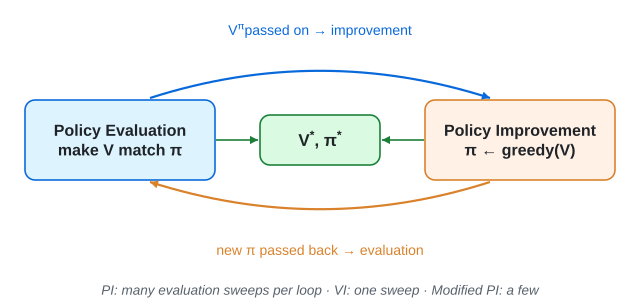
Mental model, review and formula sheet
·Consolidated mental model
Every algorithm in Part 2 fits into a single 3-layer hierarchy built directly on Part 1:
- Layer 1 — contraction engine (Bytes 10–11): because \(\gamma < 1\), both Bellman operators \(T^{\pi}\) and \(T^{*}\) are \(\gamma\)-contractions in the max-norm. Repeating \(V_{k+1} \leftarrow T(V_k)\) from any guess is guaranteed to converge to the unique fixed point.
- Layer 2 — prediction (Bytes 12–13): applying \(T^{\pi}\) repeatedly grades a frozen policy \(\pi\) (iterative policy evaluation, or \(v_{k+1} = r^{\pi} + \gamma P^{\pi} v_k\) in matrix form) without changing the environment's raw physics \(P(s' \mid s, a)\).
- Layer 3 — control via GPI (Bytes 14–18): one-step lookahead + greedy extraction strictly improves any non-optimal policy (policy improvement theorem). Running full evaluation between improvements gives policy iteration; truncating evaluation to 1 sweep gives value iteration. Both land on the exact same \(V^{*}\) and \(\pi^{*}\).
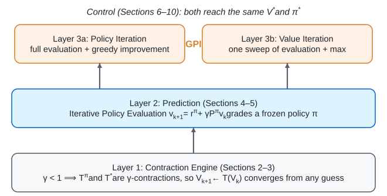
·Part 2 review questions
Check your understanding before reviewing the full walkthrough:
- Why can we solve the Bellman expectation equation with matrix inversion \(v^{\pi} = (I - \gamma P^{\pi})^{-1} r^{\pi}\), whereas we cannot use matrix inversion for the Bellman optimality equation?
- If \(\|V_1 - V_0\|_{\infty} = 10.0\) and \(\gamma = 0.8\), what is the tightest upper bound guaranteed by the contraction property on \(\|V_2 - V_1\|_{\infty}\)?
- When policy improvement updates \(\pi_1\) to \(\pi_2\), do the raw transition probabilities \(P(s' \mid s,a)\) change, or does the policy-induced matrix \(P^{\pi}\) change? Explain why.
- State the hypothesis and conclusion of the policy improvement theorem. Why does \(V^{\pi'} = V^{\pi}\) under greedy extraction prove that \(\pi'\) is optimal?
- In what precise sense is value iteration a special case of generalized policy iteration (GPI)?
- Suppose an MDP has \(N = 500\) states and \(|\mathcal{A}| = 10\) actions. What are the matrix shapes of \(P^{\pi}\), \(r^{\pi}\), \(V_k\), and the lookahead table \(Q_k\)?
Answers supplement
- For a fixed \(\pi\), \(P^{\pi}\) and \(r^{\pi}\) are known numbers and the equation is linear in \(v^{\pi}\). The optimality equation has a \(\max\) over actions inside, which is not linear, so it cannot be written as \(Mv = b\) with a fixed \(M\).
- \(\|V_2 - V_1\|_\infty = \|T V_1 - T V_0\|_\infty \le 0.8 \times 10.0 = 8.00\).
- Only \(P^{\pi}\) changes. \(P(s' \mid s,a)\) is the environment's physics; the policy only decides which action's row is copied into \(P^{\pi}\) (row Low switches from the Deliver row to the Recharge row).
- Hypothesis: \(Q^{\pi}(s, \pi'(s)) \ge V^{\pi}(s)\) for all \(s\). Conclusion: \(V^{\pi'}(s) \ge V^{\pi}(s)\) for all \(s\). If greedy \(\pi'\) gives \(V^{\pi'} = V^{\pi}\), then \(V^{\pi'}\) satisfies the Bellman optimality equation, whose solution is unique, so \(V^{\pi'} = V^*\).
- VI is GPI with evaluation truncated to a single sweep, and with improvement done implicitly by the \(\max\) inside that sweep.
- \(P^{\pi}\): \(500 \times 500\); \(r^{\pi}\): \(500 \times 1\); \(V_k\): \(500 \times 1\); \(Q_k\): \(500 \times 10\).
·Part 2 formula sheet
| Concept | Formula | Shapes / types |
|---|---|---|
| Max-norm stopping criterion | \(\Delta_k = \|V_{k+1} - V_k\|_\infty = \max_s |V_{k+1}(s) - V_k(s)| < \theta\) | \(\Delta_k, \theta \in \mathbb{R}_{\ge 0}\) |
| Contraction inequality | \(\|T(u) - T(v)\|_\infty \le \gamma \|u - v\|_\infty\) | \(u, v \in \mathbb{R}^N\); \(\gamma \in [0,1)\) |
| Iterative policy evaluation (scalar) | \(V_{k+1}(s) = \sum_a \pi(a \mid s)[R(s,a) + \gamma \sum_{s'} P(s' \mid s,a) V_k(s')]\) | \(V_k(s) \in \mathbb{R}\) |
| Vectorized policy evaluation | \(v_{k+1} = r^{\pi} + \gamma P^{\pi} v_k\) | \(v_k, r^{\pi} \in \mathbb{R}^{N \times 1}\); \(P^{\pi} \in \mathbb{R}^{N\times N}\) |
| One-step lookahead (\(Q^{\pi}\)) | \(Q^{\pi}(s,a) = R(s,a) + \gamma \sum_{s'} P(s' \mid s,a) V^{\pi}(s')\) | \(Q^{\pi} \in \mathbb{R}^{N \times |\mathcal{A}|}\) |
| Greedy policy extraction | \(\pi'(s) = \arg\max_{a} Q^{\pi}(s,a)\) | \(\pi' \in \{0, \ldots, |\mathcal{A}| - 1\}^N\) |
| Value iteration backup | \(V_{k+1}(s) = \max_a [R(s,a) + \gamma \sum_{s'} P(s' \mid s,a) V_k(s')]\) | \(V_k \in \mathbb{R}^{N\times 1}\) |
| Stopping error bound supplement | \(\|V_{k+1} - V^*\|_\infty \le \frac{\gamma}{1-\gamma}\Delta_k\) | scalar, reward units |
Worked numerical walkthrough: autonomous delivery drone MDP
This section consolidates the complete end-to-end solution of the drone MDP (\(\gamma = 0.8\)) across synchronous policy evaluation, in-place policy evaluation, policy iteration, value iteration, and exact matrix inversion. All transition probabilities and rewards are hand-chosen teaching values (not from a trained or real-world system).
W.1MDP component summary (\(\gamma = 0.8\))
States: \(\mathcal{S} = \{\text{High}\ (s_0), \text{Low}\ (s_1), \text{Critical}\ (s_2)\}\) (\(N = 3\)). Actions: \(\mathcal{A} = \{\text{Deliver}\ (a_0), \text{Recharge}\ (a_1)\}\) (\(|\mathcal{A}| = 2\)). Discount factor: \(\gamma = 0.8\).
| State \(s\) | \(R(s, \text{Del})\) | \(R(s, \text{Rech})\) | \(P(\cdot \mid s, \text{Deliver})\) | \(P(\cdot \mid s, \text{Recharge})\) |
|---|---|---|---|---|
| High (\(s_0\)) | \(+10\) | \(0\) | [0.4, 0.6, 0.0] | [1.0, 0.0, 0.0] |
| Low (\(s_1\)) | \(+6\) | \(-1\) | [0.0, 0.3, 0.7] | [0.8, 0.2, 0.0] |
| Critical (\(s_2\)) | \(-5\) | \(-2\) | [0.0, 0.0, 1.0] | [0.5, 0.5, 0.0] |
W.2Policy evaluation of \(\pi_1 = (\text{Deliver}, \text{Deliver}, \text{Recharge})\): synchronous vs. in-place
Starting from \(V_0 = [0, 0, 0]^T\) with \(\theta = 10^{-6}\), both methods converge to the exact same \(V^{\pi_1}\), with in-place finishing 19 sweeps faster:
| Sweep \(k\) | Synchronous \(V_k\) | Sync \(\Delta_k\) | In-place \(V_k\) | In-place \(\Delta_k\) |
|---|---|---|---|---|
| 0 | [0.0000, 0.0000, 0.0000] | — | [0.0000, 0.0000, 0.0000] | — |
| 1 | [10.0000, 6.0000, −2.0000] | 10.0000 | [10.0000, 6.0000, 4.4000] | 10.0000 |
| 2 | [16.0800, 6.3200, 4.4000] | 6.4000 | [16.0800, 9.9040, 8.3936] | 6.0800 |
| 3 | [18.1792, 9.9808, 6.9600] | 3.6608 | [19.8995, 13.0774, 11.1908] | 3.8195 |
| 5 | [22.4952, 14.1382, 11.1604] | 1.8964 | [24.6410, 17.1006, 14.6966] | 1.9960 |
| 10 | [27.5219, 19.1782, 16.1894] | 0.6133 | [28.8865, 20.7067, 17.8373] | 0.4073 |
| 25 | [29.8888, 21.5451, 18.5563] | 0.0216 | [29.9658, 21.6235, 18.6357] | 0.0035 |
| Final (sync 70 / IP 51) | [29.9751, 21.6314, 18.6426] | \(9.40\times 10^{-7}\) | [29.9751, 21.6314, 18.6426] | \(8.92\times 10^{-7}\) |
W.3Full policy iteration trace: \(\pi_0 \to \pi_1 \to \pi_2 = \pi^{*}\)
Outer iteration 0: policy \(\pi_0 = (\text{Rech}, \text{Rech}, \text{Rech})\) (evaluation converged in 10 synchronous sweeps)
| State | \(V^{\pi_0}(s)\) | \(Q^{\pi_0}(s, \text{Del})\) | \(Q^{\pi_0}(s, \text{Rech})\) | Greedy \(\pi_1(s)\) |
|---|---|---|---|---|
| High (\(s_0\)) | 0.0000 | 9.4286 | 0.0000 | Del |
| Low (\(s_1\)) | −1.1905 | 4.3276 | −1.1905 | Del |
| Critical (\(s_2\)) | −2.4762 | −6.9810 | −2.4762 | Rech |
Result: policy updated to \(\pi_1 = (\text{Del}, \text{Del}, \text{Rech})\).
Outer iteration 1: policy \(\pi_1 = (\text{Del}, \text{Del}, \text{Rech})\) (evaluation converged in 70 synchronous sweeps)
| State | \(V^{\pi_1}(s)\) | \(Q^{\pi_1}(s, \text{Del})\) | \(Q^{\pi_1}(s, \text{Rech})\) | Greedy \(\pi_2(s)\) |
|---|---|---|---|---|
| High (\(s_0\)) | 29.9751 | 29.9751 | 23.9801 | Del |
| Low (\(s_1\)) | 21.6314 | 21.6314 | 21.6451 | Rech |
| Critical (\(s_2\)) | 18.6426 | 9.9141 | 18.6426 | Rech |
Result: policy updated to \(\pi_2 = (\text{Del}, \text{Rech}, \text{Rech})\).
Outer iteration 2: policy \(\pi_2 = (\text{Del}, \text{Rech}, \text{Rech})\) (evaluation converged in 71 synchronous sweeps)
| State | \(V^{\pi_2}(s)\) | \(Q^{\pi_2}(s, \text{Del})\) | \(Q^{\pi_2}(s, \text{Rech})\) | Greedy \(\pi_3(s)\) |
|---|---|---|---|---|
| High (\(s_0\)) | 30.0000 | 30.0000 | 24.0000 | Del |
| Low (\(s_1\)) | 21.6667 | 21.6533 | 21.6667 | Rech |
| Critical (\(s_2\)) | 18.6667 | 9.9333 | 18.6667 | Rech |
Result: \(\pi_3 = \pi_2 = (\text{Del}, \text{Rech}, \text{Rech})\). Policy is stable — policy iteration terminates with optimal policy \(\pi^{*} = (\text{Deliver}, \text{Recharge}, \text{Recharge})\).
W.4Full value iteration trace (\(V_0 = [0,0,0]^T\), \(\theta = 10^{-6}\))
| Sweep \(k\) | \(V_k(\text{High})\) | \(V_k(\text{Low})\) | \(V_k(\text{Crit})\) | \(\Delta_k\) | Implicit greedy \(\pi\) |
|---|---|---|---|---|---|
| 0 | 0.0000 | 0.0000 | 0.0000 | — | — |
| 1 | 10.0000 | 6.0000 | −2.0000 | 10.0000 | (Del, Del, Rech) |
| 2 | 16.0800 | 6.3600 | 4.4000 | 6.4000 | (Del, Rech, Rech) |
| 3 | 18.1984 | 10.3088 | 6.9760 | 3.9488 | (Del, Rech, Rech) |
| 5 | 22.5897 | 14.2748 | 11.2610 | 1.8941 | (Del, Rech, Rech) |
| 10 | 27.5744 | 19.2410 | 16.2411 | 0.6065 | (Del, Rech, Rech) |
| 25 | 29.9147 | 21.5813 | 18.5813 | 0.0213 | (Del, Rech, Rech) |
| 70 | 30.0000 | 21.6667 | 18.6667 | \(9.29\times 10^{-7}\) | (Del, Rech, Rech) |
W.5End-to-end consistency check
| Method | \(V^{*}(\text{High})\) | \(V^{*}(\text{Low})\) | \(V^{*}(\text{Crit})\) | Max error vs. exact |
|---|---|---|---|---|
| Exact matrix inversion (Lecture 1, Byte 8) | 30.000000 | 21.666667 | 18.666667 | 0 (exact) |
| Policy iteration (\(\theta = 10^{-6}\)) | 29.999997 | 21.666663 | 18.666663 | \(3.48\times 10^{-6}\) |
| Value iteration (\(\theta = 10^{-6}\)) | 29.999996 | 21.666663 | 18.666663 | \(3.72\times 10^{-6}\) |
Does NOT demonstrate: model-free learning (we assumed exact \(P\) and \(R\) were given), continuous state spaces, or large-scale runtime speedups (on a 3-state MDP, exact matrix inversion is faster than 70 sweeps).
W.6Practice problems & code-verified answer key
Practice set (using the exact same delivery drone MDP, but with a more short-sighted discount factor \(\gamma = 0.5\)):
- Starting from \(V_0 = [0,0,0]^T\), compute sweep 1 of value iteration: \(V_1(\text{High})\), \(V_1(\text{Low})\), \(V_1(\text{Crit})\).
- Using \(V_1\) from question 1, compute both \(Q_2(\text{Low}, \text{Deliver})\) and \(Q_2(\text{Low}, \text{Recharge})\), and deduce \(V_2(\text{Low})\).
- Compute the full vector \(V_2 = [V_2(\text{High}), V_2(\text{Low}), V_2(\text{Crit})]^T\) and the max-norm change \(\Delta_2 = \|V_2 - V_1\|_\infty\).
- Check whether the optimal policy \(\pi^{*}\) changes when \(\gamma\) drops from 0.8 to 0.5, and explain why intuitively.
Answer key (code-verified)
- \(V_1 = [10.00, 6.00, -2.00]^T\) (each entry is simply \(\max_a R(s,a)\)).
- \(Q_2(\text{Low}, \text{Del}) = 6 + 0.5(0.3 \cdot 6 + 0.7 \cdot (-2)) = 6.20\); \(Q_2(\text{Low}, \text{Rech}) = -1 + 0.5(0.8 \cdot 10 + 0.2 \cdot 6) = 3.60\). Thus \(V_2(\text{Low}) = \max(6.20, 3.60) = 6.20\).
- \(V_2 = [13.80, 6.20, 2.00]^T\), so \(\Delta_2 = \max(|13.80 - 10.00|, |6.20 - 6.00|, |2.00 - (-2.00)|) = 4.00\).
- At convergence, \(V^{*} = [15.7859, 8.7623, 4.1370]^T\) and \(\pi^{*} = (\text{Del}, \text{Del}, \text{Rech}) = (\text{Deliver}, \text{Deliver}, \text{Recharge})\). Because future rewards are discounted by 50% per step instead of 20%, taking the immediate \(+6\) delivery reward in Low outweighs recharging early.